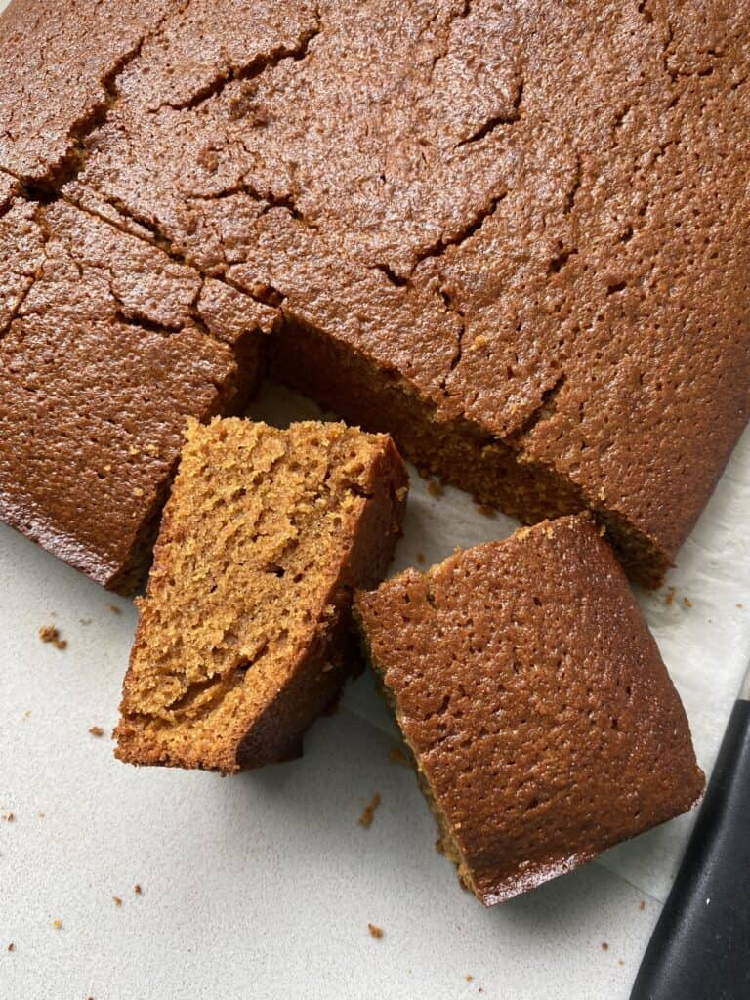

Home
Gingerbread

Description
This gingerbread is a quick and simple yet delicious tray bake, which
gives that warm ginger kick for those shortening autumnal days.

Ingredients
- 1 1/4 lbs Self Raising Flour
- 6 oz Margarine
- 4 oz Caster Sugar
- 3 tsp Ground Ginger
- 8 oz Golden Syrup
- 3 oz Currants
- 3 oz Sultanas
- 2 oz Candid Peel
Steps
- Preheat fan oven to 300°F/150°C.
- Lightly grease a baking tray.
-
Melt the golden syrup and margarine in a pan, and allow to cool so as
not to burn you when completeing the next step.
-
Place the rest of the ingredients in a large bowl and pour over the
melted golden syrup and margarine.
-
Mix with a wooden spoon to start, once the mix has come together give a
final mix with clean hands.
-
Put the mix into the tray and press down into all corners smooth with
the side of a table knife.
- Place in the oven and bake for 30/45minutes.
-
Allow to cool slightly, then cut into 1 inch wide fingers(across the
width of the tray) while still warm.